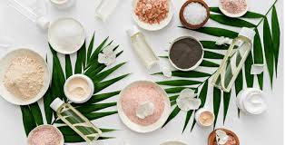
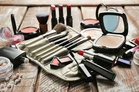
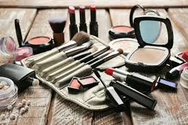
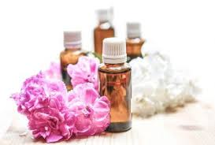
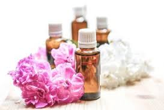

Produits de beauté bio, cosmétiques bio et naturels
Notre enseigne cosmétique propose aux amateurs de make-up des produits de beauté écologique fabriqués avec des ingrédients naturels.
Les amatrices de produits esthétiques ont l’embarras du choix parmi une gamme complète d’articles surprenants permettant d’être belles au naturel en se servant des produits cosmétiques respectueux de la nature.
Cosmétiques bio pour prendre soin de tout son corps
De nombreux clients s’intéressent aux gammes de produits de beauté réalisés avec des ingrédients naturels pour prendre soin de leur apparence.Ces articles de make-up permettent de soigner le visage, améliorer l’apparence de ses ongles, purifier son corps.
Les cosmétiques naturels pour le visage peuvent être une crème tonifiante, un masque fait d’argile verte, gommage à l’argile blanche… 
Différents produits de beauté et hygiène bio
Les produits de beauté et hygiène bio sont obtenu grâce des articles cosmétiques fait maison.Les consommateurs peuvent également consulter le catalogue de cosmétiques ayurvédiques, de gel de douche et de bain naturel ou des produits de maquillage entièrement bio.
Lorsque l’on évoque les cosmétiques naturels, on pense facilement aux soins à l’argile.
Parmi les produits contenant le plus d’articles bio, on peut citer les gammes de cosmétiques conçus pour les soins des cheveux, les produits pour prendre soin du visage ou des articles pour soigner le corps. Les produits cosmétiques bio sont valables pour toute la famille et on découvre des articles pour tous les usages.
Ainsi, on peut trouver les articles d’hygiène bébé, des couches écologiques, maternité, spécial homme…
 

Extraits de cosmétique naturel et bio
Les magasins proposant d’acheter des cosmétiques naturels offrent différentes gammes d’huiles essentielles, herbes aromatiques, rafraîchissantes, fleuries, fruitées, boisées, épicées, des huiles végétales…Le choix des cosmétiques naturels est vaste.
On peut par exemple trouver des gels d’aloe vera, des extraits de plantes liquides, des shampooings à base de plantes, poudre de plantes, poudre de fruits et vanille ou des produits préparés par nos herboristes.
 
